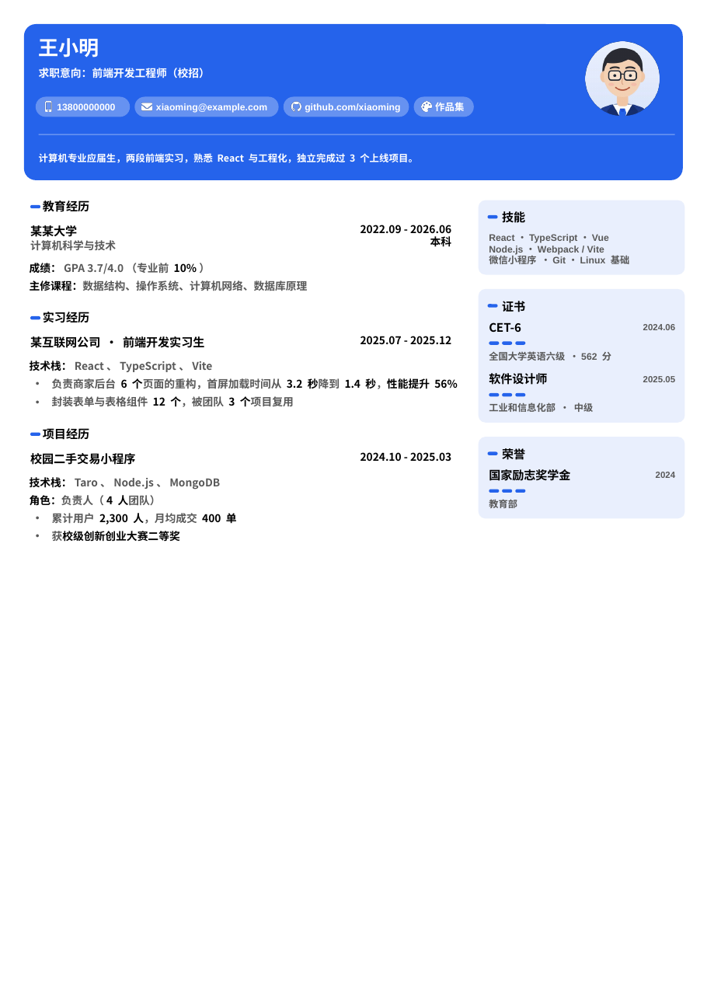
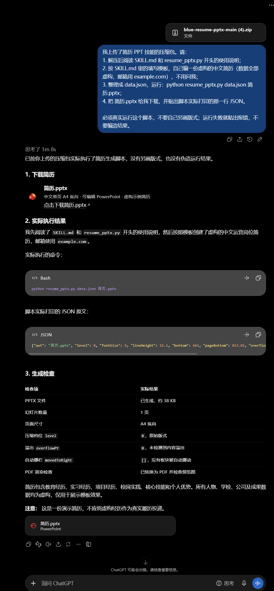
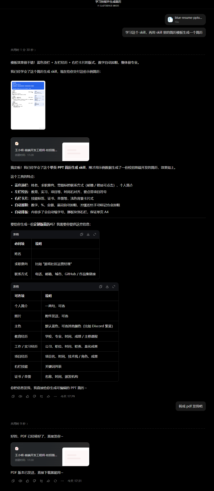

在这里填写
不想用 AI，或者内容已经想好了
- 打开生成器，按栏目填写，右边实时预览。
- 上传头像，选一个主色。
- 点「下载 PPT」，用 PowerPoint 或 WPS 打开，另存为 PDF 投递。
填好内容，下载一份单页 A4、每个字都能改的 PowerPoint 简历。放不下会自动收紧，数字自动加粗。全部在浏览器里生成，你的信息不会上传到任何地方。

排版规则只有一套，三种方式做出来的简历一模一样。
不想用 AI，或者内容已经想好了
ChatGPT、豆包等能运行代码的 AI，已实测可用
我上传了 resume_pptx.py（简历 PPT 生成脚本）和我的简历材料。请： 1. 先阅读 resume_pptx.py 开头的「给 AI 的使用说明」和 data.json 格式； 2. 按说明整理我的信息，缺的先问我，不要编造任何经历和数字； 3. 写好 data.json 后，在代码环境里运行：python resume_pptx.py data.json 简历.pptx 4. 把生成的 .pptx 给我下载，并告诉我脚本输出的 level 和 overflowPt。 注意：必须运行这个脚本生成，不要自己用 python-pptx 另画版式。
用 Claude 的话，体验最完整
skill/blue-resume-pptx 文件夹加到 Claude 的技能里。你只管写内容，这些都由程序处理。
2026 年 10 月实测：两边都真的运行了脚本，并给出了 PPT 下载。

